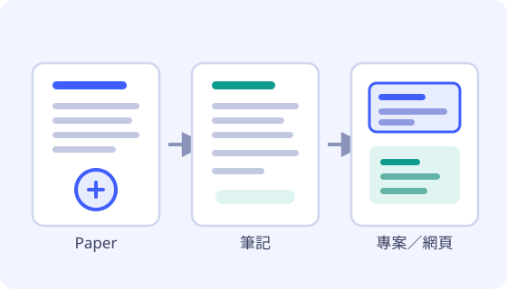

讀 paper
先看摘要與結論，再回頭確認方法與假設，最後寫下自己重寫過的一段摘要。
姓名（暱稱）：yhw 學號（匿名 ID）：112021073
我是 yhw，網路上的暱稱就叫 yhw，使用的匿名 ID 是 112021073。目前就讀於亞洲大學資訊相關科系，平常最常做的事情是讀 paper。我喜歡把一篇論文從摘要、方法一路讀到實驗結果，再用自己的話重寫一遍，藉此確認自己真的懂到哪一步；這個習慣讓我做起專案時，總是先找相關 paper 當起點，而不是憑直覺硬寫。閒暇時我會動手做小專案，例如把爬蟲蒐集來的資料整理成儀表板、把讀過的 paper 做成可公開瀏覽的筆記網站，也會研究前後端分離與雲端部署的流程，試著讓作品真的公開在網路上、被人看到。我對新技術保持好奇，也享受把複雜的東西整理成別人看得懂的樣子，目前正在加深前端撰寫與網站部署的實作能力。
以上自介共 200 字以上（不含姓名與學號）。網站僅公開暱稱與匿名 ID，真實姓名與學號另見繳交文件。
先看摘要與結論，再回頭確認方法與假設，最後寫下自己重寫過的一段摘要。
把讀到的做法動手實作，做成能公開瀏覽的小工具，順便練習版面與部署。
寫成筆記、畫成流程圖、做成網頁，讓下一次的自己不必從頭開始。
對我來說，paper 不只是論文檔案，更是一套可以拆解、驗證、再改寫的方法。以下是我最近固定追蹤的研究主題（僅列主題方向，不複製他人論文內容或圖片）。

關注在節點失效時，資料要怎麼保持可被信任的一致性，以及相關協定的取捨。
研究載入速度、資源最佳化與量測方式，讓做出來的頁面在真實裝置上跑得順。
理解 Git 版本控制、CI 與託管平台的分工，讓作品能一鍵發布到公開網址。
提醒自己不要把憑證、密碼或他人個資放進公開的儲存庫，學會先檢查再發布。
清單代表我正在練習與使用中的技術，其中雲端部署與前端版面仍在累積經驗。
本節部分內容為課程作業用途之虛構示範（虛構項目已於各條目標示，詳見繳交文件的虛構說明）。